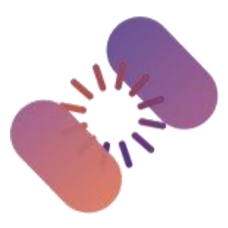

Practical 2: Interpret
Introduction to molecular visualisation to interpret protein models and design key experiments.
Day 1 · 15:15–17:00
Materials
Links are added here during and after the workshop.
| Slides | To be added |
| Worksheet | Day 1 worksheet, Practicals 1 and 2 (PDF) |
| Data files | data/practical-02_interpret/ — one folder per exercise (2.1, 2.2, 2.3) |
Before the session
Bring your laptop with ChimeraX installed and an AlphaFold Server account ready. See Before you arrive.
Questions during the session: ask any trainer or facilitator.